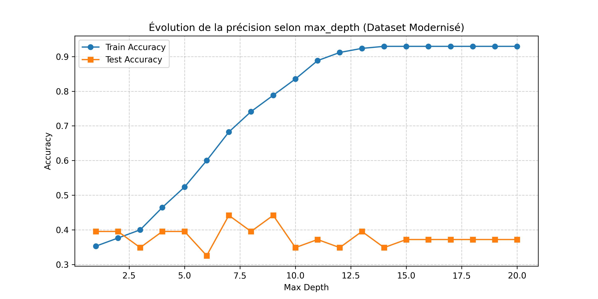
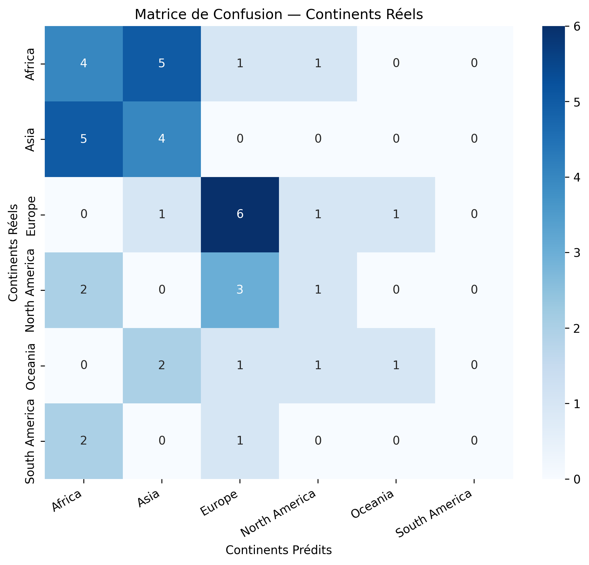
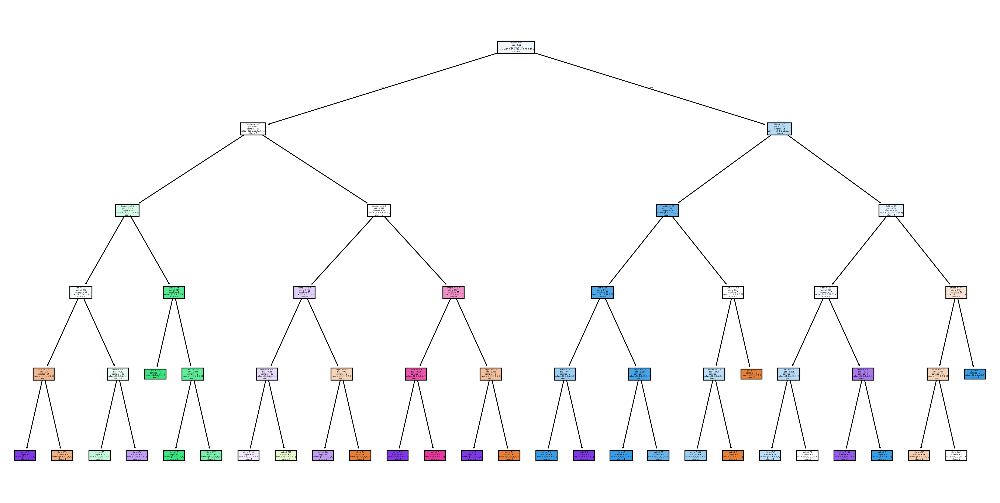

📌 Problématique
Est-il possible de prédire le continent d'appartenance d'un pays (Landmass) uniquement à partir des caractéristiques visuelles de son drapeau ?
- Dataset : 194 pays enregistrés (
flags.csv).
- Features : Couleurs (7) + Formes géométriques (9).
- Cible : Variable numérique représentant 6 continents.
📊 Bilan des Performances
- Modèle Baseline : ~35% d'accuracy (couleurs seules).
- Feature Engineering : +20% d'accuracy en ajoutant les formes (bandes, cercles, étoiles).
- Optimisation (GridSearchCV) : Élimination du surapprentissage via
max_depth optimal.
- Random Forest (5-Fold CV) : Stabilité accrue et meilleure capacité de généralisation.
📊 Importance Complète des Features (Gini Importance)
Contribution exacte de chaque caractéristique du drapeau dans la réduction de l'impureté de Gini :
Gold / Yellow (Or/Jaune)18.4%
Bars (Bandes verticales)14.2%
Stripes (Bandes horizontales)12.1%
Sunstars (Soleils & Étoiles)7.3%
Saltires (Croix de St-André)2.2%
Crescent (Croissant de lune)1.8%
📉 Analyse du Surapprentissage
Évolution de la précision en fonction de max_depth (Train vs Test) :

🎯 Matrice de Confusion
Répartition des prédictions correctes vs confusions entre continents :

🌳 Arbre de Décision Optimal
Visualisation complète des règles logiques apprises par le modèle (cliquez pour agrandir) :
